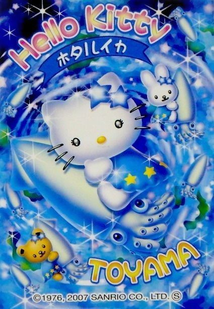

About Me
Hi there! I'm so glad you're here. Welcome to my little corner of the internet! I love the early 2000's styles, from technology to clothing. This is a webpage to explore IT technology, but also a nice spin with this Frutiger Aero aesthetic.
